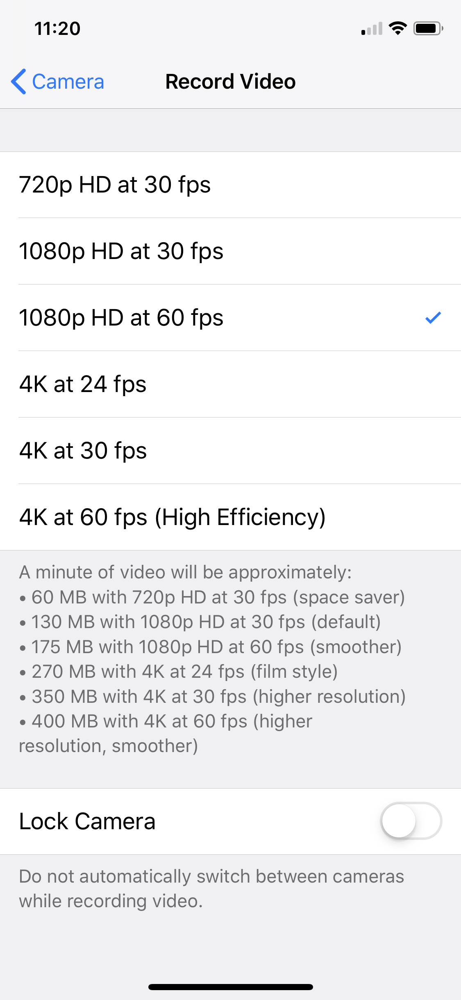

Mideo
Mideo, by Will, lets you continue listening to music while recording video.
Frequently Asked Questions
-
Why is my music still pausing?
- Make sure you have the music already playing before you start to record.
-
My music is STILL pausing. I am using a music app, like FitRadio, that isn't the typical Apple Music/Spotify/SoundCloud.
- If you are using speakers: it should always work.
- If you are using headphones: after starting to record, hit the physical resume button on your headset.
-
Every once in a while, a video fails to save for no apparent reason. What's going on?
- You probably are using an iPad in landscape mode. Mideo’s performance on iPad is not yet stable, and I do not recommend using Mideo on iPad if you cannot accept a chance of losing the video. Please email me for more questions and/or receive a refund from Apple by clicking “Report a Problem” on the receipt they emailed you for purchasing the app.
-
Why can't I record the music itself?
- iOS will not let me do this for privacy reasons. Think about it, if my app could listen in on the music playing from another app, I could also eavesdrop on any background audio or conversation. For this reason, Apple does not allow it.
The purpose of this app is to listen to music and record video at the same time. For example, I am a weightlifter, and I need to record my lifts while also listening to my favorite music. If you downloaded this app thinking it had a different purpose, email me to get a refund.
- iOS will not let me do this for privacy reasons. Think about it, if my app could listen in on the music playing from another app, I could also eavesdrop on any background audio or conversation. For this reason, Apple does not allow it.
-
Why does my music pause after switching orientations twice?
- There's no need to switch that many times, just change the default orientation.
-
What are "High", "Medium", and "Low" video resolutions? Can you be more exact?
- Apple gives me the high/medium/low as options to correspond to the resolutions that can be found in your iPhone’s Settings > Camera > Record Video. The “high” given by Apple corresponds to the highest available resolution, etc. This is what it’s like on an iPhone X:
- 
-
What does "Storage: At least 12 hours of video" mean?
- This tells you how much remaining storage is on your device, and what that means in terms of video length (rather than bytes).
-
How can I clear the app cache? I record very long videos on the dashboard of my car, and almost never save them. My device settings shows your app is holding onto a lot of space, what should I do?
- Take a video (of any length) and save it (click "Use Video"). That will clear the cache and reduce the app size.
Contact Me
- Email me at iam@willsaid.com! You can simply tap the mail icon below.
- Unless I'm asleep, I respond to emails within seconds. Yes, it's scary how fast I respond.
- Let me know if you think there's anything I should add to this support page.